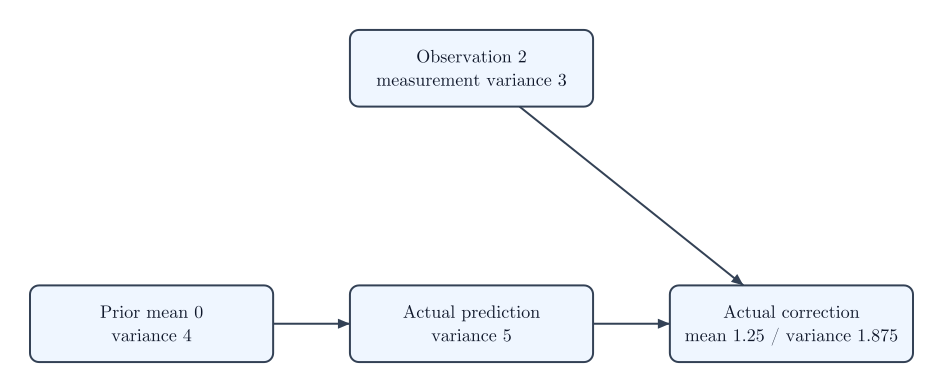
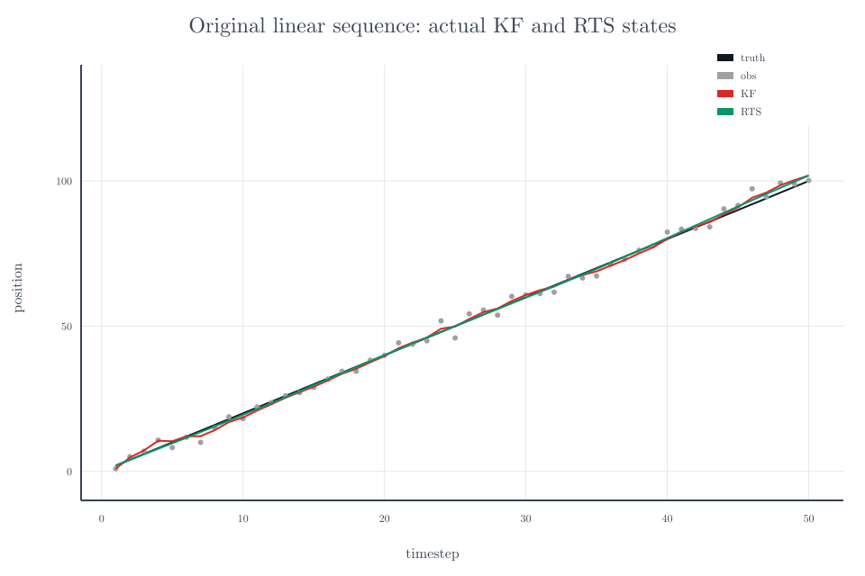
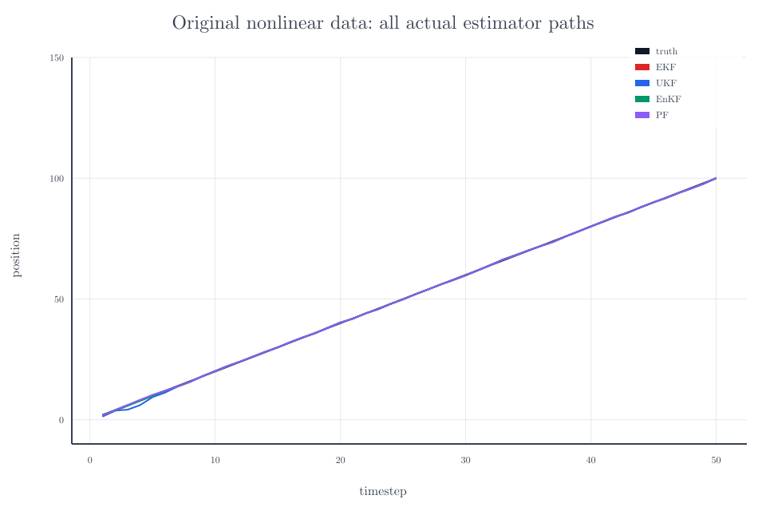
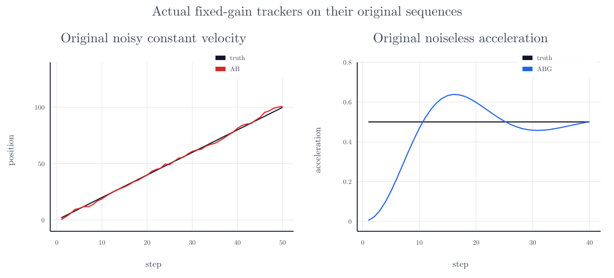
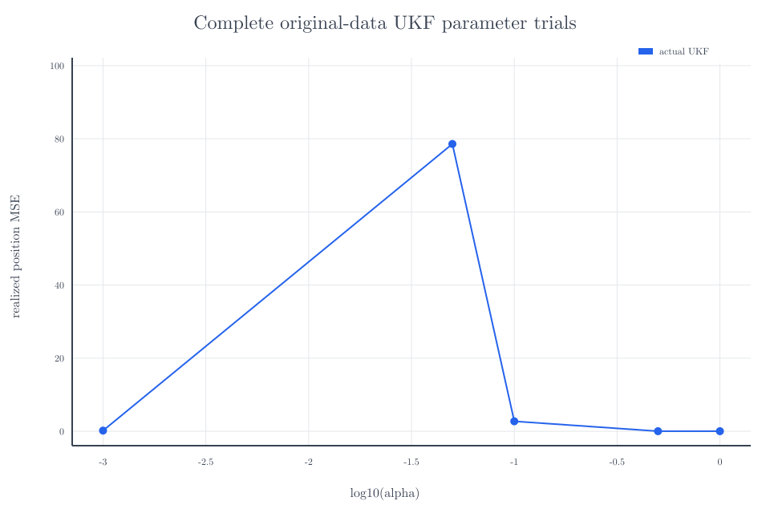

The Kalman family: actual estimates, covariance and approximation limits
Abstract
State estimation combines a dynamics model with noisy observations. We begin with one scalar prediction/correction captured at native API boundaries, then retain the original full family comparison: linear KF and RTS smoothing, EKF/UKF nonlinear estimation, information form, ensemble and particle methods, and alpha-beta/alpha-beta-gamma trackers. All original observation sequences, model parameters and seeds remain. Actual finite trajectories and error diagnostics replace cached accuracy claims; covariance statements are separated from realized-error comparisons and nonlinear approximations are not assumed to succeed.
See one native prediction and correction first
Take prior mean0 and variance4, F=H=1, process variance1, measurement variance3 and observation2. Prediction increases variance to5. The scalar gain is analytically5/8; correction gives mean1.25 and variance1.875. The program captures actual prior, predicted and corrected states around native calls, rather than replaying equations for the displayed result. Its diagram is the causal information flow, not a smoother or an iteration trace.
#include <dm/dm.hpp>
int main() {
std::filesystem::create_directories("build");
const auto s = dm::filter::kalman_tiny_step();
std::print("| actual stage | mean | variance |\n| --- | ---: | ---: |\n| prior | {} | {} |\n| predicted " "| {} | {} |\n| corrected | {} | {} |\n",
s.prior.x[0], s.prior.P[0][0], s.predicted.x[0],
s.predicted.P[0][0], s.filtered.x[0], s.filtered.P[0][0]);
dm::graphics::Diagram d;
d.node("prior", {0, 0},
std::format("Prior mean {}\nvariance {}", s.prior.x[0],
s.prior.P[0][0])).node("predict", {5, 0},
std::format(
"Actual prediction\nvariance {}",
s.predicted.P[0][0])).node(
"update", {10, 0},
std::format("Actual correction\nmean {} / variance {}", s.filtered.x[0],
s.filtered.P[0][0])).node("sensor", {5, 4},
"Observation 2\nmeasurement variance 3").edge("prior", "predict").edge("predict", "update").edge("sensor", "update").save_svg("build/kalman_stage.svg");
}| actual stage | mean | variance |
|---|---|---|
| prior | 0 | 4 |
| predicted | 0 | 5 |
| corrected | 1.25 | 1.875 |

Derive the linear update and distinguish smoothing
For a fixed linear state/observation model, prediction gives x_minus=F x and P_minus=F P F transpose+Q. With innovation z−H x_minus, the gain is
The native covariance update is the simplified (I−KH)P_minus, using LU inverses; it is not a Joseph or square-root update. Matrix shape checks do not establish finite values, positive covariance, independence assumptions or numerical conditioning. Under a valid linear Gaussian model, the mean is the conditional MMSE estimate. Floating results remain approximate and can lose covariance symmetry or PSD.
RTS smoothing uses the whole sequence. Its backward gain is C_i=P_filtered_i F transpose times inverse(P_predicted_(i+1)), and its mean correction uses the next smoothed-minus-predicted state. The native smooth() method records one actual forward pass and one backward pass; no prefix reruns construct its output. The final smoothed and filtered states agree because no later observations remain. Conditional covariance reduces in the exact model, but individual realized errors and one sequence's empirical MSE need not always decrease.
Retain the original linear fifty-step study and information form
The original model has dt1, true velocity2, F=[[1,1],[0,1]], H=[1,0], Q=.01I, measurement variance4, initial state0 and covariance100I. Fifty position-only observations use mt19937 seed42 and Gaussian SD2. The original nonlinear sequence follows those draws with the same engine, as described below. Exact normal-distribution mapping is standard-library dependent. No external dataset replaces these controlled simulations.
Information form represents Y=P inverse and y=Y x. Its measurement contributions are additive, but this implementation converts through covariance form during prediction and uses matrix inverses for reported state/covariance. Algebraic equivalence does not imply bitwise equality or a measured speed advantage.
#include <dm/dm.hpp>
int main() {
std::filesystem::create_directories("build");
const auto s =
dm::filter::kalman_family_study(dm::filter::kalman_demo_data());
const auto &f = s.linear.filtered;
const auto &m = s.linear.smoothed;
long double min_delta = 1e100L;
double max_info = 0;
for (std::size_t i = 0; i < f.size(); ++i) {
auto delta = f[i].P;
for (int r = 0; r < 2; ++r) {
max_info =
std::max(max_info, std::fabs(f[i].x[r] - s.information[i].x[r]));
for (int c = 0; c < 2; ++c)
delta[r][c] -= m[i].P[r][c];
}
min_delta =
std::min(min_delta, dm::filter::kalman_min_eigenvalue2(delta));
}
std::print("| actual method | final position | final velocity | realized position MSE |\n| --- | ---: | " "---: | ---: |\n| filtered | {:.12f} | {:.12f} | {:.12e} |\n| RTS smoothed | {:.12f} | " "{:.12f} | {:.12e} |\n| information | {:.12f} | {:.12f} | {:.12e} |\n",
f.back().x[0], f.back().x[1],
dm::filter::kalman_position_mse(f, s.data.linear_truth),
m.back().x[0], m.back().x[1],
dm::filter::kalman_position_mse(m, s.data.linear_truth),
s.information.back().x[0], s.information.back().x[1],
dm::filter::kalman_position_mse(s.information,
s.data.linear_truth));
std::print("\nMaximum actual information/KF state difference {:.12e}; minimum symmetric-part eigenvalue " "of filtered-minus-smoothed covariance {:.12e}.\n",
max_info, min_delta);
std::print("\n| original step | measurement | true position | actual filtered position | actual " "smoothed position |\n| ---: | ---: | ---: | ---: | ---: |\n");
for (std::size_t i : {0, 1, 2, 9, 24, 49})
std::print("| {} | {:.12f} | {} | {:.12f} | {:.12f} |\n", i + 1,
s.data.linear_measurements[i][0], s.data.linear_truth[i],
f[i].x[0], m[i].x[0]);
std::vector<double> t(f.size());
std::iota(t.begin(), t.end(), 1.);
std::vector<double> z;
for (const auto &row : s.data.linear_measurements)
z.push_back(row[0]);
auto p = dm::graphics::RPlot::create();
p.line(t, s.data.linear_truth, "truth", {17, 24, 39}, 2).points(
t, z, "obs", {160, 160, 160}, 3).line(t,
dm::filter::kalman_state_column(
f), "KF", {220, 38, 38}, 2).line(
t, dm::filter::kalman_state_column(m), "RTS", {5, 150, 105}, 2).title(
"Original linear sequence: actual KF and RTS states").x_label("timestep").y_label("position").y_limits(-10, 140).save_svg("build/kalman_linear.svg");
}| actual method | final position | final velocity | realized position MSE |
|---|---|---|---|
| filtered | 101.871901844643 | 2.112542231354 | 1.206192133235e+00 |
| RTS smoothed | 101.871901844643 | 2.112542231354 | 4.161553043460e-01 |
| information | 101.871901844643 | 2.112542231354 | 1.206192133235e+00 |
Maximum actual information/KF state difference 5.684341886081e-14; minimum symmetric-part eigenvalue of filtered-minus-smoothed covariance -4.960224939121e-18.
| original step | measurement | true position | actual filtered position | actual smoothed position |
|---|---|---|---|---|
| 1 | 0.899531011159 | 2 | 0.881894012754 | 2.031424278111 |
| 2 | 5.030866139382 | 4 | 4.794856701660 | 3.953389494021 |
| 3 | 6.947721711332 | 6 | 7.218295842859 | 5.870000685621 |
| 10 | 18.141630696442 | 20 | 18.550161995447 | 19.480113692670 |
| 25 | 45.946560704673 | 50 | 49.856616281728 | 50.054828582930 |
| 50 | 100.171846934142 | 100 | 101.871901844643 | 101.871901844643 |

Keep all four nonlinear estimators, including poor outcomes
The original sensor is h(x)=2 position+sin(position), with derivative2+cos(position) at least one. It is monotonic, avoiding a separate sign ambiguity, but it still makes a broad uncertain prior non-Gaussian after observation. The original fifty nonlinear measurements have Gaussian SD.5, continued from the same seed42 engine, and use R=.25.
EKF uses central-difference Jacobians (native default step1e−5). UKF propagates2n+1 sigma points; with lambda=alpha²(n+kappa)−n, mean weights are lambda/(n+lambda) and1/(2(n+lambda)), with the native covariance correction1−alpha²+beta at the central point. The original defaults are alpha=.001,beta2,kappa0. Sigma rules are approximations, and large cancelling weights can be sensitive to approximation and rounding. Neither monotonic sensing nor this finite experiment guarantees that UKF is better than EKF.
The stochastic EnKF uses300 members and seed7, sample cross-covariance and independently perturbed observations. The bootstrap particle filter uses300 particles and seed7, Gaussian likelihoods in log-weight form, and unconditional multinomial resampling after each update. These are finite Monte Carlo approximations; reporting all complete trajectories is not a universal ranking of methods.
#include <dm/dm.hpp>
int main() {
std::filesystem::create_directories("build");
const auto s =
dm::filter::kalman_family_study(dm::filter::kalman_demo_data());
const char *names[] = {"EKF", "UKF", "EnKF", "PF"};
const std::vector<dm::filter::KalmanState> *states[] = {&s.ekf, &s.ukf,
&s.ensemble,
&s.particle};
std::print("| actual method | complete steps | final position | final velocity | realized position MSE " "|\n| --- | ---: | ---: | ---: | ---: |\n");
for (int j = 0; j < 4; ++j) {
const auto &v = *states[j];
std::print("| {} | {} | {:.12f} | {:.12f} | {:.12e} |\n", names[j],
v.size(), v.back().x[0], v.back().x[1],
dm::filter::kalman_position_mse(v, s.data.nonlinear_truth));
}
std::print("\n| original step | nonlinear observation | true position | actual EKF | actual UKF | " "actual EnKF | actual PF |\n| ---: | ---: | ---: | ---: | ---: | ---: | ---: |\n");
for (std::size_t i : {0, 1, 2, 9, 24, 49})
std::print("| {} | {:.12f} | {} | {:.12f} | {:.12f} | {:.12f} | {:.12f} |\n",
i + 1, s.data.nonlinear_measurements[i][0],
s.data.nonlinear_truth[i], s.ekf[i].x[0], s.ukf[i].x[0],
s.ensemble[i].x[0], s.particle[i].x[0]);
std::vector<double> t(50);
std::iota(t.begin(), t.end(), 1.);
auto p = dm::graphics::RPlot::create();
p.line(t, s.data.nonlinear_truth, "truth", {17, 24, 39}, 2).line(
t, dm::filter::kalman_state_column(s.ekf), "EKF", {220, 38, 38}, 2).line(t, dm::filter::kalman_state_column(s.ukf), "UKF", {37, 99, 235}, 2).line(t, dm::filter::kalman_state_column(s.ensemble), "EnKF", {5, 150, 105}, 2).line(t, dm::filter::kalman_state_column(s.particle), "PF", {139, 92, 246}, 2).title("Original nonlinear data: all actual estimator paths").x_label("timestep").y_label("position").y_limits(-10, 150).save_svg("build/kalman_nonlinear.svg");
}| actual method | complete steps | final position | final velocity | realized position MSE |
|---|---|---|---|---|
| EKF | 50 | 100.070344877635 | 2.083567933218 | 3.177015500071e-02 |
| UKF | 50 | 100.048717010701 | 2.076830921384 | 1.915117832103e-01 |
| EnKF | 50 | 100.037690010167 | 2.088934543373 | 2.631675185064e-02 |
| PF | 50 | 100.047848724083 | 2.051603548222 | 3.023891617006e-02 |
| original step | nonlinear observation | true position | actual EKF | actual UKF | actual EnKF | actual PF |
|---|---|---|---|---|---|---|
| 1 | 4.154318788412 | 2 | 1.384580636227 | 1.384611397739 | 2.082115142714 | 1.714370215131 |
| 2 | 7.603948745376 | 4 | 3.772901582206 | 3.805406932764 | 3.814690851844 | 4.080701843816 |
| 3 | 11.298874535391 | 6 | 5.875914258273 | 4.179918774474 | 5.787836096478 | 6.146597897316 |
| 10 | 41.251828964589 | 20 | 20.162580507997 | 20.190908256696 | 20.162568595958 | 20.159038231961 |
| 25 | 99.270743719889 | 50 | 49.859805874532 | 49.851660650171 | 49.872785847758 | 49.847647079035 |
| 50 | 199.869027297140 | 100 | 100.070344877635 | 100.048717010701 | 100.037690010167 | 100.047848724083 |

Retain both fixed-gain tracker controls
Alpha-beta predicts position plus velocity times dt, then corrects position by alpha times residual and velocity by beta residual/dt. The original gains are (.5,.3),dt1 on the position-only observations. Fixed gains are a chosen approximation, not automatically the steady-state gain of the exact Q/R model used above.
Alpha-beta-gamma adds acceleration prediction and correction2 gamma residual/dt². The original (.5,.1,.01),dt1 control begins at rest and receives forty noiseless positions from true acceleration.5. Its input differs from the noisy fifty-step constant-velocity experiment, so cross-panel errors are not a common-data competition.
#include <dm/dm.hpp>
int main() {
std::filesystem::create_directories("build");
const auto s =
dm::filter::kalman_family_study(dm::filter::kalman_demo_data());
std::vector<double> t(s.alpha_beta.size()), ab, ta(s.alpha_beta_gamma.size()), accel, truth_accel(s.alpha_beta_gamma.size(), .5);
std::iota(t.begin(), t.end(), 1.);
std::iota(ta.begin(), ta.end(), 1.);
for (const auto &v : s.alpha_beta)
ab.push_back(v.position);
for (const auto &v : s.alpha_beta_gamma)
accel.push_back(v.acceleration);
std::print("| original tracker | steps | final position | final velocity | final acceleration |\n| --- " "| ---: | ---: | ---: | --- |\n| alpha-beta | {} | {:.12f} | {:.12f} | not modeled |\n| " "alpha-beta-gamma | {} | {:.12f} | {:.12f} | {:.12f} |\n",
s.alpha_beta.size(), s.alpha_beta.back().position,
s.alpha_beta.back().velocity, s.alpha_beta_gamma.size(),
s.alpha_beta_gamma.back().position,
s.alpha_beta_gamma.back().velocity,
s.alpha_beta_gamma.back().acceleration);
std::print("\n| acceleration step | original measurement | actual acceleration estimate |\n| ---: | " "---: | ---: |\n");
for (std::size_t i : {0, 1, 2, 9, 19, 39})
std::print("| {} | {} | {:.12f} |\n", i + 1,
s.data.acceleration_measurements[i],
s.alpha_beta_gamma[i].acceleration);
auto p = dm::graphics::RPlot::create();
p.line(t, s.data.linear_truth, "truth", {17, 24, 39}, 2).line(t, ab, "AB",
{220, 38, 38},
2).title(
"Original noisy constant velocity").x_label("step").y_label("position").y_limits(-10, 140);
auto q = dm::graphics::RPlot::create();
q.line(ta, truth_accel, "truth", {17, 24, 39}, 2).line(ta, accel, "ABG",
{37, 99, 235}, 2).title("Original noiseless acceleration").x_label("step").y_label("acceleration").y_limits(-.05, .8);
auto layout = dm::graphics::RLayout::create(1, 2);
layout.add(p).add(q).size(1100, 500).title("Actual fixed-gain trackers on their original sequences").fit_panels().save_svg("build/kalman_fixed_gain.svg");
}| original tracker | steps | final position | final velocity | final acceleration |
|---|---|---|---|---|
| alpha-beta | 50 | 100.956292177149 | 1.088279224617 | not modeled |
| alpha-beta-gamma | 40 | 399.875694249503 | 19.914407946221 | 0.500849943526 |
| acceleration step | original measurement | actual acceleration estimate |
|---|---|---|
| 1 | 0.25 | 0.005000000000 |
| 2 | 1 | 0.021950000000 |
| 3 | 2.25 | 0.052910500000 |
| 10 | 25 | 0.468248663835 |
| 20 | 100 | 0.598328705119 |
| 40 | 400 | 0.500849943526 |

A realized-error counterexample and sigma-parameter controls
For a scalar filter seeing [0,10] while the chosen realized truth is [0,0], future information can pull the earlier smoothed estimate away from its actual truth. This does not contradict the model's covariance reduction: conditional expected error and the realized error of one sequence are different objects. The program prints both empirical MSEs without asserting that smoothing must win.
The UKF profile then holds the original nonlinear data and model fixed while changing alpha. It records each complete result or explicit failure. Finite parameter trials do not isolate approximation error from roundoff or establish a generally optimal alpha.
#include <dm/dm.hpp>
int main() {
std::filesystem::create_directories("build");
dm::filter::KalmanFilter control({{1}}, {{1}}, {{.1}}, {{1}}, {0}, {{1}});
const auto c = control.smooth({{0}, {10}});
std::print("| realized-error control | filtered MSE | smoothed MSE |\n| --- | ---: | ---: |\n| truth " "zero, observations zero and ten | {:.12f} | {:.12f} |\n",
dm::filter::kalman_position_mse(c.filtered, {0, 0}),
dm::filter::kalman_position_mse(c.smoothed, {0, 0}));
const auto d = dm::filter::kalman_demo_data();
std::print("\n| actual UKF alpha | outcome | final position | realized nonlinear position MSE |\n| ---: " "| --- | ---: | ---: |\n");
std::vector<double> x, y;
for (double alpha : {.001, .05, .1, .5, 1.}) {
try {
const auto v = dm::filter::kalman_demo_ukf(d, alpha);
const auto mse =
dm::filter::kalman_position_mse(v, d.nonlinear_truth);
std::print("| {:.3f} | complete | {:.12f} | {:.12e} |\n", alpha,
v.back().x[0], mse);
x.push_back(std::log10(alpha));
y.push_back(mse);
} catch (const std::runtime_error &) {
std::print("| {:.3f} | native numerical failure | unavailable | unavailable |\n",
alpha);
}
}
if (x.empty())
throw std::runtime_error("no complete UKF profile run");
bool cap = false;
try {
(void) dm::filter::kalman_family_study(d, {300, 300, .001, 139, 600});
} catch (const std::length_error &) {
cap = true;
}
if (!cap)
throw std::runtime_error("complete step admission");
std::print("\nThe complete140-input-step study rejects a139-step ceiling before running filters.\n");
const double maximum = *std::max_element(y.begin(), y.end());
auto p = dm::graphics::RPlot::create();
p.line(x, y, "actual UKF", {37, 99, 235}, 2).points(x, y, "", {37, 99, 235},
5).title(
"Complete original-data UKF parameter trials").x_label("log10(alpha)").y_label("realized position MSE").y_limits(-.05 * maximum, 1.3 * maximum + .01).save_svg("build/kalman_controls.svg");
}| realized-error control | filtered MSE | smoothed MSE |
|---|---|---|
| truth zero, observations zero and ten | 7.379107506815 | 12.582021138449 |
| actual UKF alpha | outcome | final position | realized nonlinear position MSE |
|---|---|---|---|
| 0.001 | complete | 100.048717010701 | 1.915117832103e-01 |
| 0.050 | complete | 100.048727233335 | 7.858096208681e+01 |
| 0.100 | complete | 100.048741358480 | 2.734108139852e+00 |
| 0.500 | complete | 100.049320170055 | 2.801233672899e-02 |
| 1.000 | complete | 100.051057995635 | 2.690618335175e-02 |
The complete140-input-step study rejects a139-step ceiling before running filters.

Scope, ownership and verification
The native family helper validates finite matched scalar observations/truth and complete input-step/population ceilings before copying data or constructing filters. Defaults admit10000 total original steps and100000 combined ensemble/particle members; zero disables optional ceilings. These counts exclude several method output trajectories, temporary matrices, byte/capacity overhead and peak RAM. The original populations remain300 each with seed7. Underlying numerical exceptions propagate and no partial family result is returned. Generic single-step capture follows the mutable filter contract and cannot roll back an already committed prediction when a later measurement fails.
All displayed trajectories own actual native state/covariance outputs. Model callbacks remain alive during each native filter call and are not retained in returned results. KF/RTS uses one native forward/backward run; independent estimators and parameter controls are separate complete experiments, not prefix replay. Covariance eigenvalue diagnostics use the symmetric part and ordinary rounded arithmetic, so they are observations rather than exact PSD proofs. Plotting never substitutes cached conclusions for computed outputs.
Dense linear filtering costs matrix operations per step, smoothing adds storage for the complete sequence, and sampled methods additionally scale with their member/particle counts. The fixed-gain trackers omit covariance adaptation. No timing benchmark or distribution-free accuracy ranking is inferred from this study. In particular, a monotonic nonlinear sensor does not make Gaussian approximations exact, algebraic information equivalence is not bitwise identity, and a smoother's covariance advantage is not a guarantee about every realized error.
Independent NumPy forward Kalman and backward RTS recursions verified all 50
linear state/covariance pairs. The original report program was reconstructed and
all original observations, truths, seeds and full family trajectories matched
exactly, including both fixed-gain trackers. The frozen original Kalman header
also produced bitwise-identical KF/RTS trajectories. Native controls cover
scalar exact values, ownership, input/population ceilings and mutation on
capture failure. The shared ten-report build passed 131 native tests, 38
directly instrumented address/undefined-behaviour sanitizer tests, 89 compiled
public examples, documentation coverage for all 388 scoped definitions and ten
representative clangd hovers. All five complete C++ report programs executed
successfully and their native figures were visually reviewed. Batch receipts are
retained under build/mepml-conversion/batch-174-183/.
References
R. E. Kalman (1960), “A New Approach to Linear Filtering and Prediction Problems”, Journal of Basic Engineering82(1),35–45, doi:10.1115/1.3662552. H. E. Rauch,F. Tung,C. T. Striebel (1965), “Maximum Likelihood Estimates of Linear Dynamic Systems”, AIAA Journal3(8),1445–1450, doi:10.2514/3.3166.
S. J. Julier,J. K. Uhlmann (2004), Unscented Filtering and Nonlinear Estimation, Proceedings of the IEEE92(3),401–422. G. Evensen (1994), Sequential Data Assimilation with a Nonlinear Quasi-Geostrophic Model Using Monte Carlo Methods to Forecast Error Statistics, JGR99(C5),10143–10162.
The original family background also includes Anderson and Moore's Optimal Filtering(1979) for information form; Burgers,van Leeuwen,Evensen(1998), Monthly Weather Review126,1719–1724 for stochastic ensemble analysis; Gordon,Salmond,Smith(1993), IEE ProceedingsF140,107–113 for bootstrap particle filtering; and Benedict,Bordner(1962), IRE Transactions on Automatic Control7(4),27–32 for fixed-gain tracking. The actual native variant details used here are stated above rather than attributing all implementation choices to those sources.